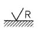
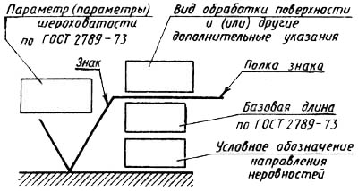

Основные параметры шероховатости (по ГОСТ 2789-73) и их обозначения
Содержание:
2. Типы направлений неровностей
3. Среднее арифметическое отклонение профиля Ra, мкм
4. Высота неровностей профиля по 10 точкам Rzи наибольшая высота неровностей профиля Rmax, мкм
5. Средний шаг неровностей профиля Sm и средний шаг местных выступов S, мм
6. Соотношение значений параметра Ra и базовой длины l
7. Соотношение значений параметров Rz, Rmax и базовой длины l
8. Обозначения шероховатости поверхностей и правила нанесения их на чертежах изделий
Шероховатость поверхности – это совокупность неровностей поверхности с относительно малыми шагами, выделенная с помощью базовой длины (рис. 1).
ГОСТ 2789-73 полностью соответствует международной рекомендации по стандартизации ИСО Р 468. Он устанавливает перечень параметров и типов направлений неровностей, которые должны применяться при установлении требований и контроле шероховатостей поверхности, числовые значения параметров и общие указания.
1. Требования к шероховатости поверхности должны устанавливаться исходя из функционального назначения поверхности для обеспечения заданного качества изделий. Если в этом нет необходимости, то требования к шероховатости поверхности не устанавливаются и шероховатость этой поверхности контролироваться не должна.
2. Требования к шероховатости поверхности должны устанавливаться путем указания параметра шероховатости (одного или нескольких) из перечня, приведенного в п.4, значений выбранных параметров (см. табл. 3 -5) и базовых длин, на которых происходит определение параметров.
Если параметры Ra, Rz, Rmax определены на базовой длине в соответствии с табл. 6 и 7, то эти базовые длины не указываются в требованиях к шероховатости.
В технической документации, разработанной до 1975г. использовали классы шероховатости по ГОСТ 2789-59; для их перевода можно пользоваться данными табл. 1.
При необходимости дополнительно к параметрам шероховатости поверхности устанавливаются требования к направлению неровностей поверхности (табл. 2) к способу или последовательности способов получения (обработки) поверхности.
Числа из табл. 3 – 5 используют для указания наибольших и наименьших допускаемых значений, границ допускаемого диапазона значений и номинальных значений параметров шероховатости.
Для номинальных числовых значений параметров шероховатости должны устанавливаться допустимые предельные отклонения.
Допустимые предельные отклонения средних значений параметров шероховатости в процентах от номинальных следует выбирать из ряда 10; 20; 40. Отклонения могут быть односторонними и симметричными.
3. Требования к шероховатости поверхности не включают требований к дефектам поверхности, поэтому при контроле шероховатости поверхности влияние дефектов поверхности должно быть исключено. При необходимости требования к дефектам поверхности должны быть установлены отдельно.
Допускается устанавливать требования к шероховатости отдельных участков поверхности (например, к участкам поверхности, заключенным между порами крупнопористого материала, к участкам поверхности срезов, имеющим существенно отличающиеся неровности).
Требования к шероховатости поверхности отдельных участков одной поверхности могут быть различными.
4. Параметры шероховатости (один или несколько) выбирают из приведенной номенклатуры.
Ra – среднее арифметическое отклонение профиля;
Rz – высота неровностей профиля по десяти точкам;
Rmax – наибольшая высота профиля;
Sm – средний шаг неровностей;
S – средний шаг местных выступов профиля;
tp – относительная опорная длина профиля, где р – значение уровня сечений профиля.
Параметр Ra является предпочтительным.
5. Числовые значения параметров шероховатости (наибольшие, номинальные или диапазоны значений) выбирают из табл. 3-5.
6. Относительная опорная длина профиля tp: 10; 15; 20; 30; 40; 50; 60; 70; 80: 90%.
7. Числовые значения уровня сечения профиля р выбирают из ряда:
5; 10; 15; 20; 25; 30; 40; 50; 60; 70; 80; 90% от Rmax.
8. Числовые значения базовой длины l выбирают из ряда:
0,01; 0,03; 0,08; 0.25; 0,80; 2,5; 8; 25мм.
1. Классы шероховатости (ГОСТ 2789-59) и соответствующие им наибольшие значения параметров шероховатости (ГОСТ 2789-73)
|
Классы |
Параметры шероховатости, мкм |
Базовая |
|
|---|---|---|---|
|
Rа |
Rz |
||
|
1 |
80 |
320 |
8,0 |
|
2 |
40 |
160 |
|
|
3 |
20 |
80 |
|
|
4 |
10 |
40 |
2,5 |
|
5 |
5 |
20 |
|
|
6 |
2,5 |
10 |
0,8 |
|
7 |
1,25 |
6,3 |
|
|
8 |
0,63 |
3,2 |
0,25 |
|
9 |
0,32 |
1,6 |
|
|
10 |
0,16 |
0,8 |
|
|
11 |
0,08 |
0,4 |
|
|
12 |
0,04 |
0,2 |
|
|
13 |
0,02 |
0,1 |
0,08 |
|
14 |
0,01 |
0,05 |
|
Схема шероховатости поверхности и ее элементы показаны на рис. 1, где l – базовая длина: m – средняя линия профиля; Sm – средний шаг неровностей профиля; S – средний шаг местных выступов профиля; Himах – отклонения пяти наибольших максимумов профиля; Himin – отклонения пяти наибольших минимумов профиля; himax – расстояние от высших точек пяти наибольших максимумов до линии, параллельной средней и не пересекающей профиль: himin – расстояние от низших точек пяти наибольших минимумов до этой же линии; Rmax – наибольшая высота профиля; у -отклонения профиля от линии m; tp – относительная опорная длина профиля; р – уровень сечения профиля; bi – длина отрезков, отсекаемых на заданном уровне р.
Рис. 1. Схема шероховатости поверхности и ее элементы
2. Типы направлений неровностей
|
Типы направлений неровностей |
Схематическое изображение |
Условное обозначение на чертеже |
Пояснение |
|---|---|---|---|
|
Параллельное |
Схематическое изображение шероховатости – параллельное |
Условное обозначение шероховатости на чертеже – параллельное |
Параллельно линии, изображающей на чертеже, поверхность, к шероховатости которой устанавливаются требования |
|
Перпендикулярное |
Схематическое изображение шероховатости – перпендикулярное |
Условное обозначение шероховатости на чертеже – перпендикулярное |
Перпендикулярно к линии, изображающей на чертеже поверхность, к шероховатости которой устанавливаются требования |
|
Перекрещивающееся |
Схематическое изображение шероховатости – перекрещивающиеся |
Условное обозначение шероховатости на чертеже – перекрещивающиеся |
Перекрещивание в двух направлениях наклонно к линии, изображающей на чертеже поверхность, к шероховатости которой устанавливаются требования |
|
Произвольное |
Схематическое изображение шероховатости – произвольное |
Условное обозначение шероховатости на чертеже – произвольное |
Различные направления по отношению к линии, изображающей на чертеже поверхность, к шероховатости которой устанавливаются требования |
|
Кругообразное |
Схематическое изображение шероховатости – Кругообразное |
Условное обозначение шероховатости на чертеже – Кругообразное |
Приблизительно кругообразно по отношению к центру поверхности, к шероховатости которой устанавливаются требования |
|
Радиальное |
Схематическое изображение шероховатости – Радиальное |
 Условное обозначение шероховатости на чертеже – Радиальное |
Приблизительно радиально по отношению к центру поверхности, к шероховатости которой устанавливаются требования |


Условные обозначения направления неровностей приводят на чертеже при необходимости.
3. Среднее арифметическое отклонение профиля Ra, мкм
|
100 |
10.0 |
1,00 |
0,100 |
0.010 |
|
80 |
8,0 |
0,80 |
0,080 |
0,008 |
|
63 |
6,3 |
0,63 |
0,063 |
— |
|
50 |
5,0 |
0.50 |
0,050 |
— |
|
40 |
4,0 |
0,40 |
0,040 |
— |
|
32 |
3,2 |
0,32 |
0,032 |
— |
|
25 |
2,5 |
0,25 |
0,025 |
— |
|
20 |
2,0 |
0,20 |
0,020 |
— |
|
16,0 |
1,60 |
0,160 |
0,016 |
— |
|
12,5 |
1,25 |
0,125 |
0,012 |
— |
Примечание. Предпочтительные значения параметров подчеркнуты.
4. Высота неровностей профиля по 10 точкам Rzи наибольшая высота неровностей профиля Rmax, мкм
|
— |
1000 |
100 |
10.0 |
1,00 |
0,100 |
|
— |
800 |
80 |
8,0 |
0,80 |
0,080 |
|
— |
630 |
63 |
6,3 |
0,63 |
0,063 |
|
— |
500 |
50 |
5,0 |
0,50 |
0,050 |
|
— |
400 |
40 |
4.0 |
0,40 |
0.040 |
|
— |
320 |
32 |
3,2 |
0,32 |
0,032 |
|
— |
250 |
25,0 |
2.5 |
0,25 |
0,025 |
|
— |
200 |
20.0 |
2.0 |
0,20 |
— |
|
1600 |
160 |
16,0 |
1,60 |
0,160 |
— |
|
1250 |
125 |
12,5 |
1.25 |
0.125 |
— |
Примечание. Предпочтительные значения параметров подчеркнуты.
5. Средний шаг неровностей профиля Sm и средний шаг местных выступов S, мм
|
— |
10.0 |
1.00 |
0,100 |
0,010 |
|
— |
8,0 |
0.80 |
0.080 |
0,008 |
|
— |
6.3 |
0.63 |
0,063 |
0,006 |
|
— |
5,0 |
0s50 |
0,050 |
0,005 |
|
— |
4,0 |
0,40 |
0,040 |
0.004 |
|
— |
3,2 |
0.32 |
0,032 |
0,003 |
|
— |
2.5 |
0.25 |
0.025 |
0.002 |
|
— |
2,0 |
0.20 |
0.020 |
— |
|
— |
1,60 |
0,160 |
0.0160 |
— |
|
12.5 |
1.25 |
0,125 |
0.0125 |
— |
6. Соотношение значений параметра Ra и базовой длины l
|
Ra, мкм |
l, мм |
|---|---|
|
До 0,025 |
0,08 |
|
Св. 0,025 до 0,4 |
0.25 |
|
Св. 0,4 до 3,2 |
0,8 |
|
Св. 3,2до 12,5 |
2,5 |
|
Св. 12.5 до 100 |
8,0 |
7. Соотношение значений параметров Rz, Rmax и базовой длины l
|
Rz= Rmax, мкм |
l, мм |
|---|---|
|
До 0,10 |
0,08 |
|
Св. 0,10 до l,6 |
0,25 |
|
Св. 1,6 до 12,5 |
0,8 |
|
Св.12.5 до 50 |
2,5 |
|
Св.50 до 400 |
8,0 |
8. Обозначения шероховатости поверхностей и правила нанесения их на чертежах изделий
Обозначения шероховатости поверхностей и правила нанесения их на чертежах изделий устанавливает ГОСТ 2.309-73, который полностью соответствует ИСО 1302-78. Обозначения шероховатости проставляют на всех поверхностях изделия, выполняемых по чертежу, независимо от методов их образования, кроме поверхностей, шероховатость которых не обусловлена требованиями конструкции.

Рис. 2. Структура обозначения шероховатости поверхности
Рис. 3. Знаки шероховатости поверхности
Структура обозначения шероховатости поверхности приведена на рис 2. При наличии в обозначении шероховатости только значения параметра (параметров) применяют знак без полки.
В обозначении шероховатости поверхности, вид обработки которой конструктором не устанавливается, применяют знак по рис. 3,а.
В обозначении шероховатости поверхности, которая должна быть образована удалением слоя материала, например, точением, фрезерованием, травлением и т.п. применяют знак по рис. 3.б.
В обозначении шероховатости поверхности, которая должна быть образована без удаления слоя материала, например, литьем, ковкой, штамповкой, прокатом, волочением и т.п., а также поверхности, не обрабатываемой по данному чертежу, применяют знак по рис. 3.в.
Значение параметра шероховатости указывают в обозначении шероховатости:
для параметра Ra – без символа, например 0,4;
для остальных параметров – после соответствующего символа, например Rmax 6,3; Sm0,63; t50 70; S0,032; Rz 32.
(В примере t50 70 указана относительная опорная длина профиля tp= 70% при уровне сечения профили р = 50%)
При указании диапазона значений параметра шероховатости поверхности в обозначении шероховатости приводят пределы значений параметра, размещая их в две строки, например:
0,8 :Rz 0,10 : Rmax 0,80 : t50 70
0,4 0,05 0,32 50 и т.п.
В верхней строке приводят значение параметра, соответствующее более грубой шероховатости.
При указании номинального значения параметра шероховатости поверхности в обозначении приводят это значение с предельными отклонениями по ГОСТ 2789 – 73, например:
1 + 20%; Rz80-10%; Sm 0,63+20%; t50 70 ±40% и т.п.
Базовую длину в обозначении шероховатости поверхности не указывают, если требования к шероховатости нормируют указанием параметров Ra, Rz и определение параметров должно производиться в пределах базовой длины, соответствующей значению параметров в табл. 6. 7.
Вид обработки поверхности указывают в обозначении шероховатости только в случаях, когда он является единственным, применимым для получения требуемого качества поверхности (рис. 4).
Допускается применять упрощенное обозначение шероховатости поверхностей с разъяснением его в технических требованиях чертежа по примеру, указанному на рис. 5
Рис. 4. Указание необходимого вида обработки
Рис. 5. Упрошенное обозначение шероховатости поверхности с разъяснением в технических требованиях
Рис. 6. Порядок записи значений параметров шероховатости при указании двух или более параметров
В упрощенном обозначении используют знак v и строчные буквы русского алфавита в алфавитном порядке, без повторений и, как правило, без пропусков.
При указании номинального значения параметра шероховатости значения параметров записывают сверху вниз в следующем порядке (рис. 6):
параметр высоты неровностей профиля;
параметр шага неровностей профиля;
относительная опорная длина профиля.
Если шероховатость одной и той же поверхности различна на отдельных участках, то ли участки разграничивают сплошной тонкой линией с нанесением соответствующих размеров и обозначений шероховатости (рис. 7, а). Через заштрихованную зону линию границы между участками не проводят (рис. 7, б).
Рис. 7. Разграничение различных участков шероховатости на одной поверхности
Рис. 8. Обозначение шероховатости поверхности зубьев детали без указания их профиля
Рис. 9. Обозначение шероховатости поверхности профиля резьбы
Рис. 10. Обозначение шероховатости поверхности контура детали
Рис. 11. Обозначение одинаковой шероховатости поверхности сложной конфигурации
Обозначение шероховатости рабочих поверхностей зубьев зубчатых колес, эвольвентных шлицев и т.п., если на чертеже не приведен их профиль, условно наносят на линии делительной поверхности (рис. 8. а, б, в): для глобоидных червяков и сопряженных с ним колес – на линии расчетной окружности.
Обозначение шероховатости поверхности профиля резьбы наносят по общим правилам. При изображении профиля (рис. 9, а) или условно на выносной линии для указания размера резьбы (рис. 9, б, в, е), на размерной линии или на ее продолжении (рис. ).
Если шероховатость поверхностей, образующих контур, должна быть одинаковой, обозначение шероховатости наносят один раз в соответствии с рис. 10, а, б.
В обозначении одинаковой шероховатости поверхностей, плавно переходящих одна в другую, знак О не приводят (рис. 10, в).
Обозначение одинаковой шероховатости поверхности сложной конфигурации допускается приводить в технических требованиях чертежа со ссылкой на буквенное обозначение поверхности, например:
Шероховатость поверхности А – Rz10
При этом буквенное обозначение поверхности наносят на полке линии-выноски, Проведенной от утолщенной штрихпунктирной линии (рис. 11), которой обводят поверхность на расстоянии 0,8 … 1мм от линии контура.